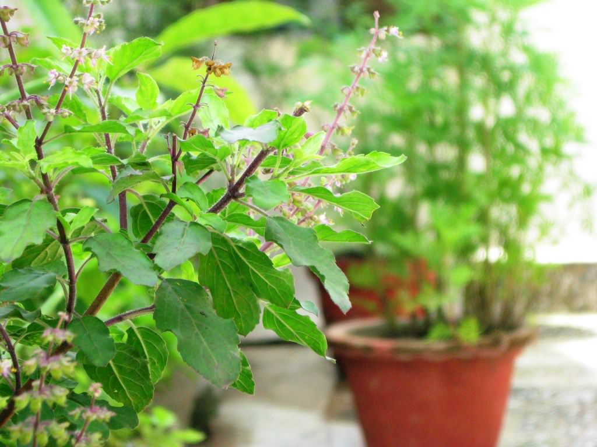

Tulsi

Tulsi in India is ubiquitous in hindu tradition. Tulsi is derived from a Sanskrit word, which means “matchless one”. Tulsi is just not implicated in the ayurvedic medicine but also in other medicinal systems like in Greek, Roman and Unani. Its scientific name is Ocimum Sanctum.
It is grown in warm and tropical areas. Tulsi grows fragrantly, erect and with several branches. It can carry the height up to 30 to 60 cm on its maturity. Tulsi leaves are simple, elliptic, oblong with obtuse or acute, entire or subserrate margins. These are present on opposite sites. Tulsi leaves are filled with scents as it smells very good. These can be of 5 cm. Tulsi flowers are so small with elongated racemes present as in close whorls. These are of purple color. Tulsi fruits are very small and seeds are of reddish yellow color.